Фундамент дизайна
Цвет
Цвет в веб-дизайне — это ключевой элемент, влияющий на восприятие пользователей, их эмоциональное состояние и функциональность интерфейса. Правильно подобранные цвета помогают передавать сообщения, создавать уникальную атмосферу и упрощают навигацию по содержимому.
Ошибки
Цвет вызывает сильную эмоцию
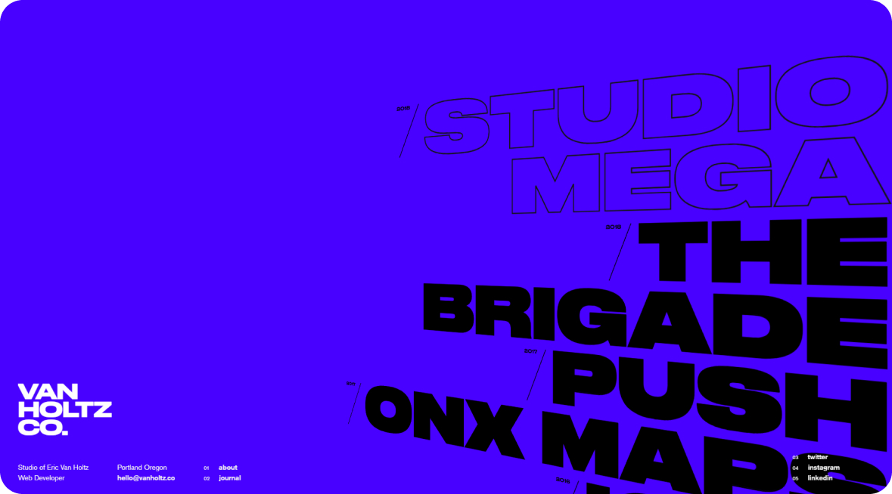
Скриншот сайта студии Van Holtz Co
Van Holtz Co – это студия, специализирующаяся на усовершенствованных цифровых веб-приложениях с упором на анимированный, адаптивный и интерактивный контент. Яркий фиолетовый цвет на сайте вызывает сильные эмоции, клиент запомнит этот сайт.
Цвет создает акцент
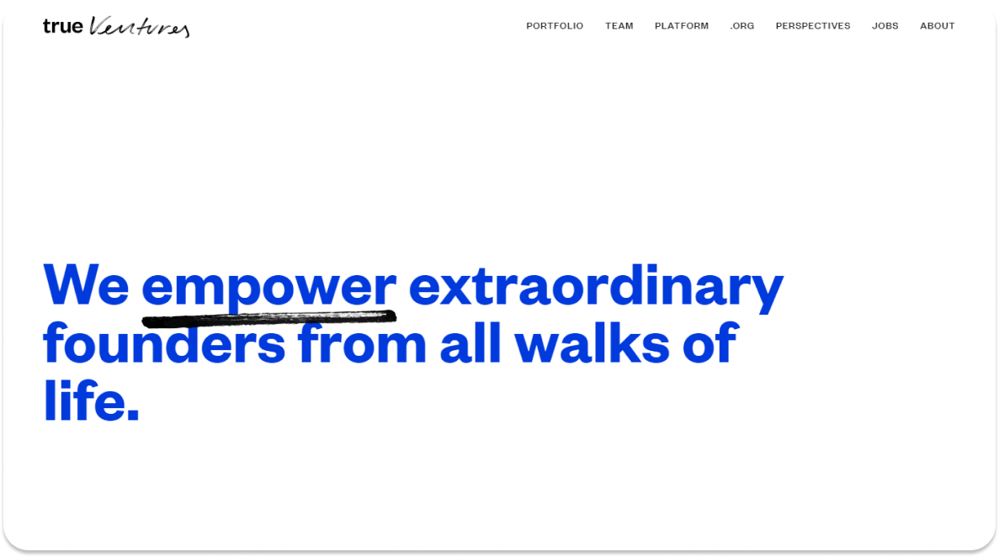
Скриншот сайта True Ventureso
True Ventures это студия, специализирующаяся на расширении возможности основателей из всех слоев общества и поддерживании их в создании выдающихся компаний. Заголовок на этом сайте выделен синим, внимание пользователя фокусируется на нём, и синий цвет становится кричащим.
Цветом можно зафиксировать функциональность объектов
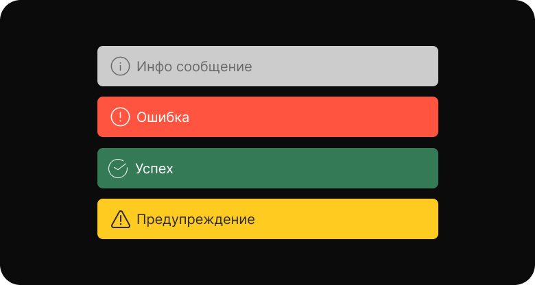
Физика цвета
Белый цвет содержит в себе весь цветовой спектр.
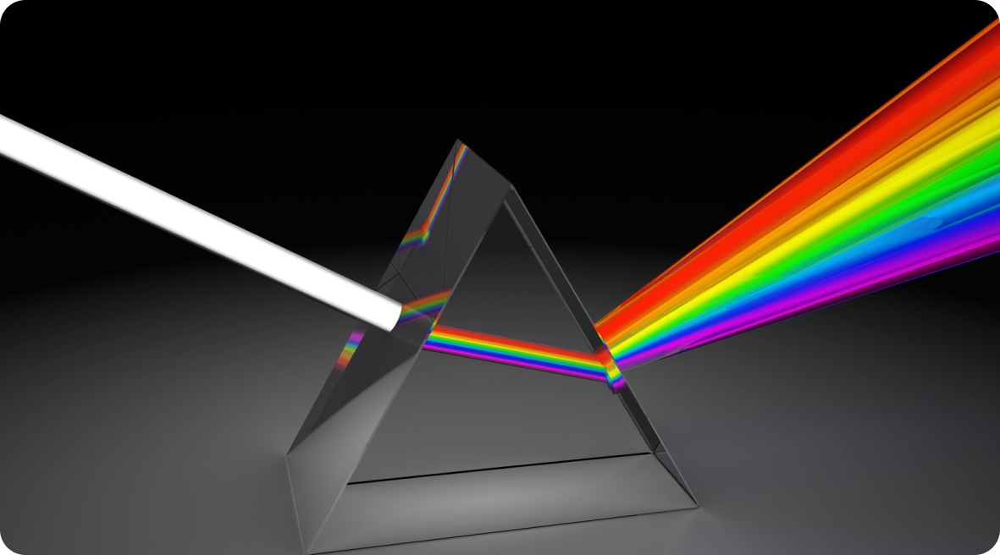
Ньютон предложил схематическое представление цветового спектра в виде круга, где цвета были расположены по периметру в определенном порядке.
Первичные цвета
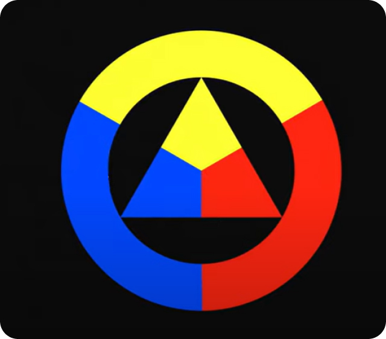
Ньютон выделил три основных цвета: красный, зеленый и синий (RGB).
Вторичные цвета
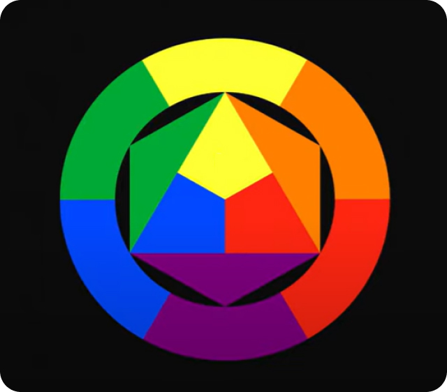
Если объединить синий с жёлтым, то получится зелёный. Если объединить красный с жёлтым, то получится зелёный. Если объединить синий с красным, то получится зелёный.
Третичные цвета
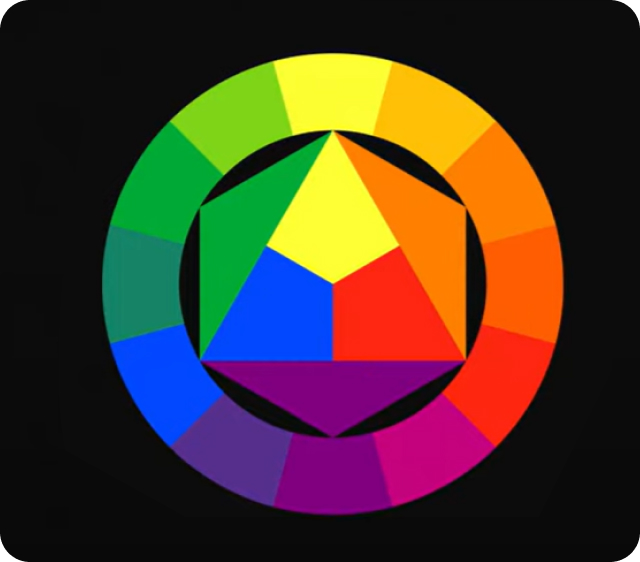
Дробя цвет, дальше по той же логике, мы получим промежуточные цвета.
Цветовой круг
Цветовой круг помогает выбирать близкие и противоположные цвета.
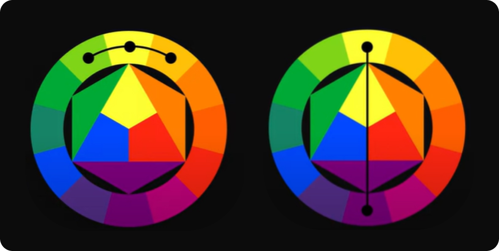
Комплементарное
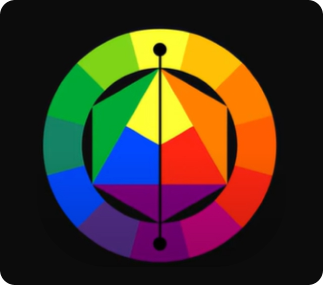
Сочетание цветов расположенных на противоположных сторонах круга. Хорошо подходит для расстановки акцентов. Для этого один из цветов делают основным, а другой - дополнительным, чтобы выделить отдельные объекты.
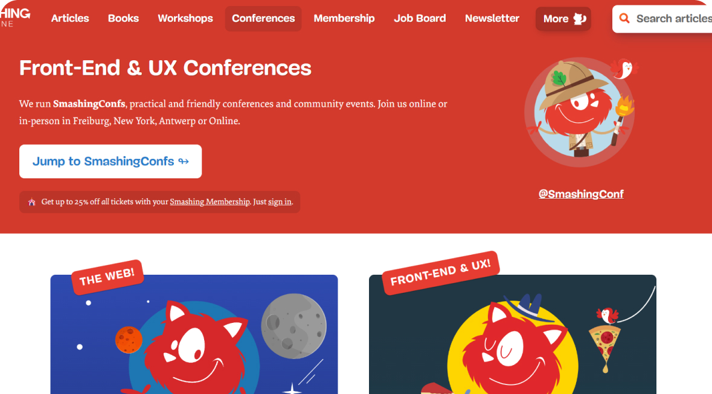
Скриншот сайта Smashing Magazin
Основные цвета сайта - синий и красный, которые являются комплементарными. Этот контраст создает визуально привлекательный и динамичный дизайн.
Классическая триада
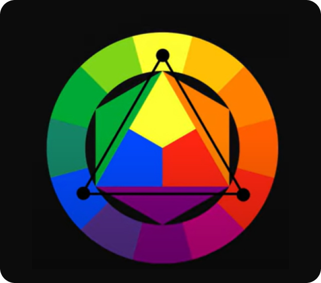
Сочетание трёх цветов по углам треугольника. Этот вариант подойдёт, если вам нужно больше разнообразия в цветовой гамме.
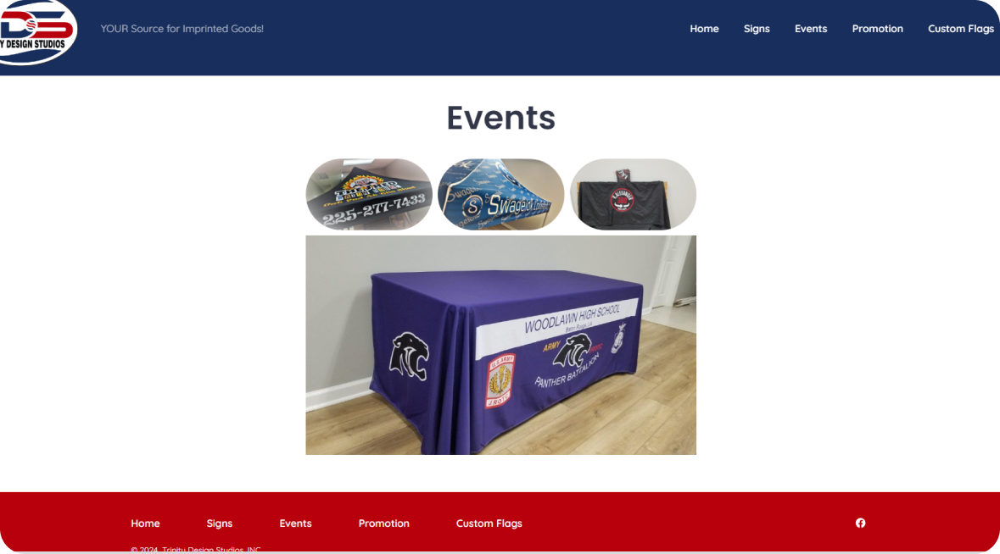
Скриншот сайта Trinity Design Studio
Основные цвета сайта - синий, желтый и красный. Эти три цвета образуют классическую триаду на цветовом круге.
Тетрада
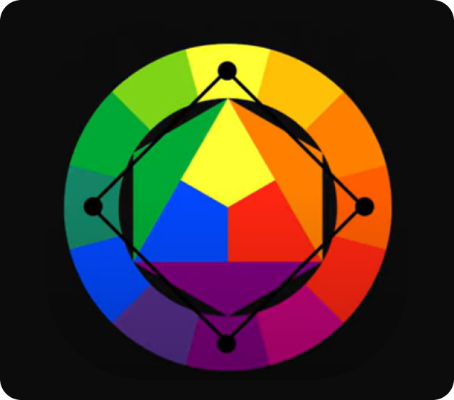
Сочетание четырёх цветов по углам квадрата. Подходит, если вам нужно красочные и разнообразное изображение.
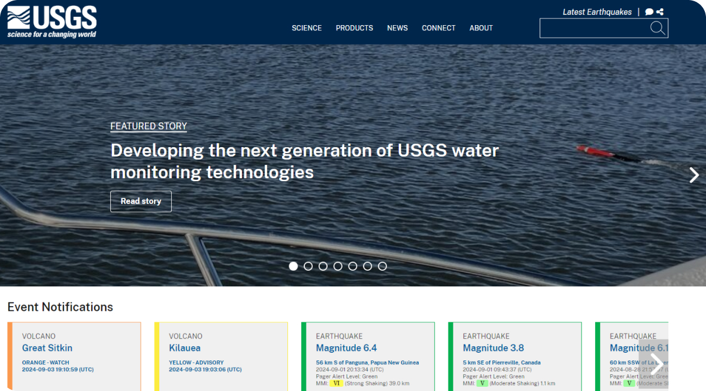
Скриншот сайта USGS
Основные цвета сайта - темно-синий, желтый, светло-розовый и зеленый. Эти четыре цвета образуют тетраду на цветовом круге.
Аналоговая триада
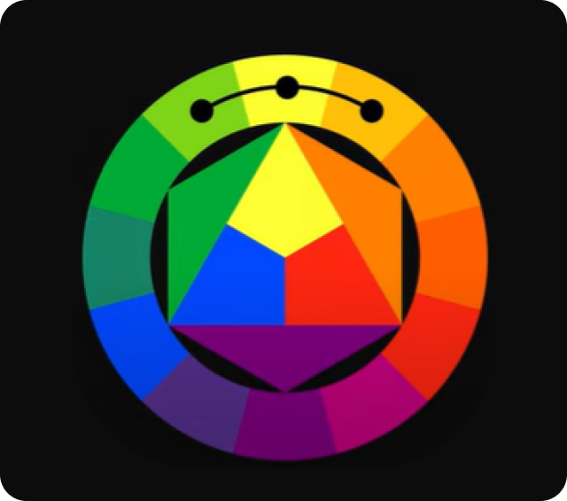
Сочетание трёх цветов, расположенных рядом на внешнем круге. Подходит, если вам нужны мягкие переходы между цветами.
Психология цвета
Встроенных предпочтений по цвету нет. На восприятие цвета влияет культура и окружающий контекст.
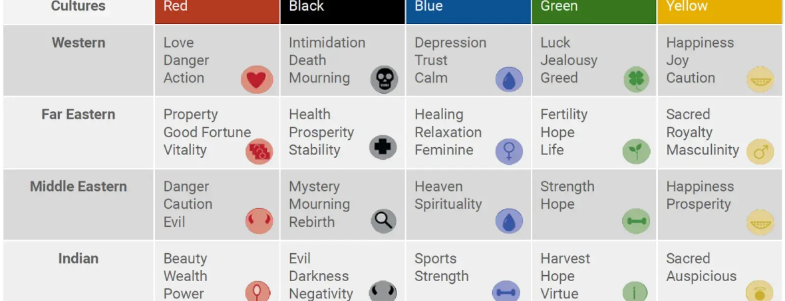
Красный
Красный— цвет страсти, энергии, движения, власти, а также опасности.
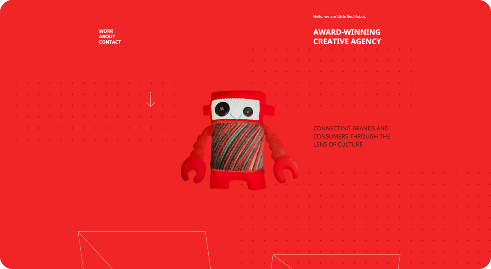
Скриншот сайта агенстваLittle Red Robot
Ярко-красный цвет придает сайту больше энергии. Создается впечатление, что работа с этой компанией будет увлекательной, полной творчества и веселья.
Зелёный
Зелёный— цвет здоровье, свежести, гармонии, спокойствия, а также богатства.
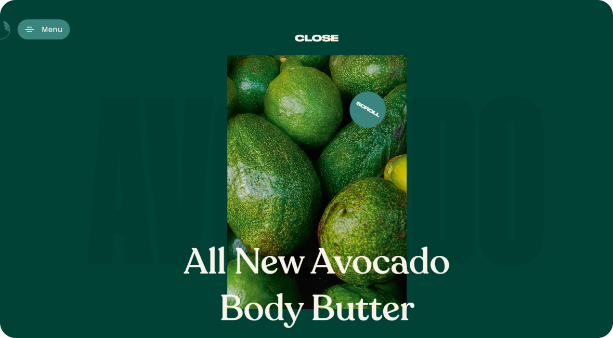
Скриншот сайтаThe Body Shop Body Butters
Зеленый цвет визуально подчеркивает, что продукты Body Butters создаются из натуральных и экологичных компонентов и помогает позиционировать Body Butters как средства для оздоровления и ухода за кожей.
Синий
Синий— цвет доверия, надежности, интеллектуальности и корпоративности.
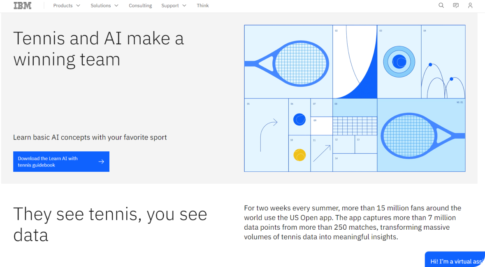
Скриншот сайтаIBM
Синий цвет передает восприятие IBM как компании, стоящей на передовых позициях в сфере информационных технологий.
Жёлтый
Жёлтый— цвет интеллекта, креативности, доступности, дружелюбия и современности.
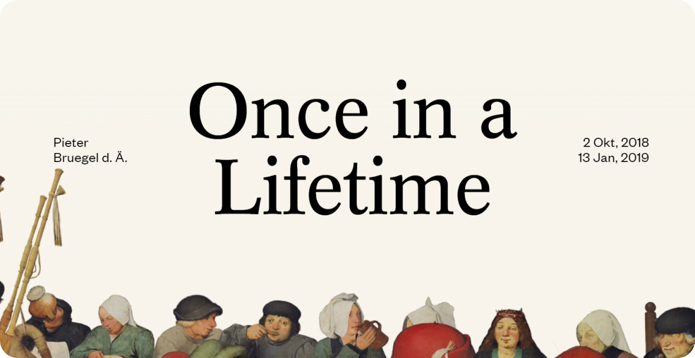
Скриншот сайтаBruegel – Once in a Lifetime
Хотя желтый цвет воспринимается как современный и яркий, он также может ассоциироваться с винтажностью и историчностью. Это перекликается с ретроспективным характером выставки работ XV-XVI веков.
Чёрный
Чёрный— цвет элегантности, роскоши, власти, авторитета, а также печали и траура.
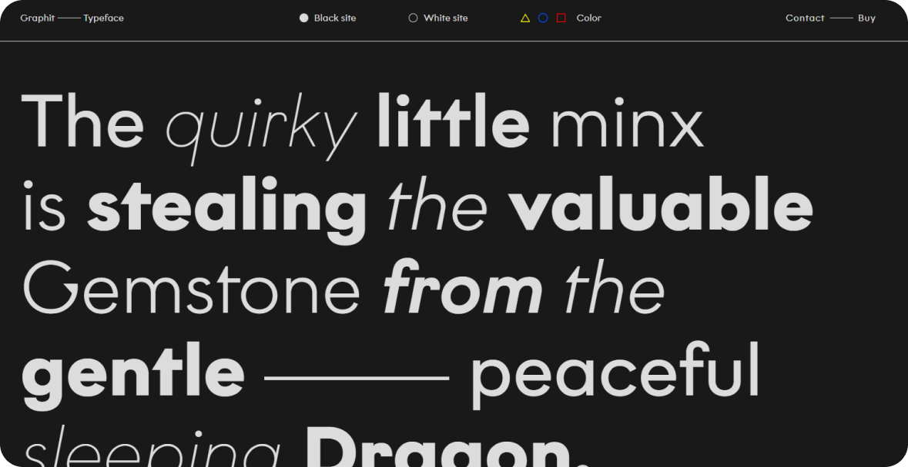
Скриншот сайтаGraphit Type
Черный цвет на сайте создает ощущение элегантности, стиля и премиального качества. Это соответствует позиционированию Graphit Type как бренда, предлагающего высококачественные шрифты и типографские решения.
Как работать с цветом
Цветовая палитра — это набор взаимосвязанных цветов, используемых в дизайне, оформлении или брендинге. Она представляет собой гармоничное сочетание оттенков, которые дополняют друг друга и создают целостную визуальную идентичность.
1. Создаем цветовую палитру
Чаще всего ты будешь работать с одним акцентным цветом твоего клиента. В теории можно создать дополнительные цвета по аналоговой схеме или комплиментарной. Но это нужно согласовывать с заказчиком, при необходимости.
Но всё же есть некоторые рекомендации, которые помогут вам создать эффективную цветовую палитру:
1. Определи цели и контекст. Сформулируй четкие цели и задачи, которые должна решать твоя цветовая палитра. Учитывай особенности бренда, целевую аудиторию и контекст использования.
Пример: Создание цветовой палитры для бренда спортивной одежды, ориентированного на молодежь. Для этого бренда можно использовать активные, энергичные цвета.
2. Исследуй и вдохновляйся. Изучи аналогичные бренды, дизайны и тренды в вашей индустрии. Обрати внимание на палитры, которые тебе нравятся и соответствуют твоему видению.
Пример: Изучение цветовых решений конкурентов в этой отрасли, таких как Nike, Adidas, Under Armour.
3. Выбери основные цвета. Определи 1-3 ключевых цвета, которые будут формировать основу палитры. Эти цвета должны максимально точно отражать ценности и образ вашего бренда.
Пример: Для спортивного бренда можно выбрать такие основные цвета, как: - Насыщенный синий - ассоциируется со спортом, энергией и динамикой. - Яркий оранжевый - создает ощущение энтузиазма и молодости. - Светлый серый - является нейтральным фоном, на котором выделяются другие цвета.
4. Подбери дополнительные оттенки. Добавь 2-4 более светлых, темных или нейтральных вариаций основных цветов. Они должны гармонично сочетаться и дополнять основную палитру.
Пример: Для синего: темно-синий, голубой, бирюзовый. Для оранжевого: желтый, красный, коралловый. Для серого: графитовый, стальной, жемчужный.
2. Применяем цветовую палитру
После того, как ты создал цветовую палитру, пришло время использовать выбранные цвета в твоем дизайне и посмотреть, насколько хорошо они работают.
1. Используй правило 60-30-10. 60% — основной цвет, 30% — второстепенный и 10% — акцентный. Используй акцентный цвет лишь для тех элементов, которые необходимо выделить на странице — например, кнопка призыва к действию.
2. Тестируй и корректируй. Примени цветовую палитру в разных контекстах и форматах. При необходимости скорректируй оттенки для достижения максимальной гармоничности.
Итоги
1. Влияние цвета на восприятие. Цвета обладают способностью вызывать различные эмоции и ассоциации, что критично при передаче сообщений и создании нужного настроения в дизайне.
2. Цветовой круг. Использование цветового круга помогает дизайнерам выбирать цвета, которые сочетаются друг с другом, создавая гармонию в композиции. Основные цвета, вторичные и третичные цвета служат основой для создания цветовых палитр.
3. Цветовые схемы. Понимание различных цветовых схем (например, монохроматическая, аналоговая, комплементарная) позволяет дизайнерам экспериментировать с цветами, находя индивидуальные решения для своих проектов.
4. Советы по выбору цвета. Для достижения наилучшего результата важно учитывать контраст, читаемость и доступность, особенно для пользователей с нарушениями восприятия цвета.
Примеры заданий для практики
Шрифты в гармонии
Используя цветовой круг, создай три разных цветовых схемы (монохроматическую(оттенучную), комплементарную и аналоговую) для одной и той же страницы. Объясни, как каждая схема влияет на восприятие дизайна.
Создание брендового цвета
Представь, что ты разрабатываешь бренд для новой компании. Выбери цвет (или цветовую палитру), который будет представлять этот бренд, и создай лендинг или сайт, используя эти цвета. Объясни, почему ты выбрал именно эти оттенки и как они отражают идентичность бренда.
Цветовые эмоции
Создай презентацию или инфографику, в которой ты сопоставишь определенные цвета с эмоциями и ассоциациями, которые они могут вызывать. Для каждого цвета приведи примеры использования в дизайне (например, красный — энергия, страсть, используется в кнопках «Купить»).
Анализ конкурентной среды
Выбери три конкурентных веб-сайта в одной нише (например, рестораны, онлайн-магазины, блоги) и проанализируй их цветовые схемы. Какие цвета они используют для привлечения внимания и создания атмосферы? Что ты мог бы улучшить в их подходе?
Создание дизайн-гида
Создай краткий дизайн-гид, который будет включать цветовую палитру, рекомендации по использованию каждого цвета (например, для заголовков, текста, фонов и кнопок). Укажи HEX-коды и примеры применения.